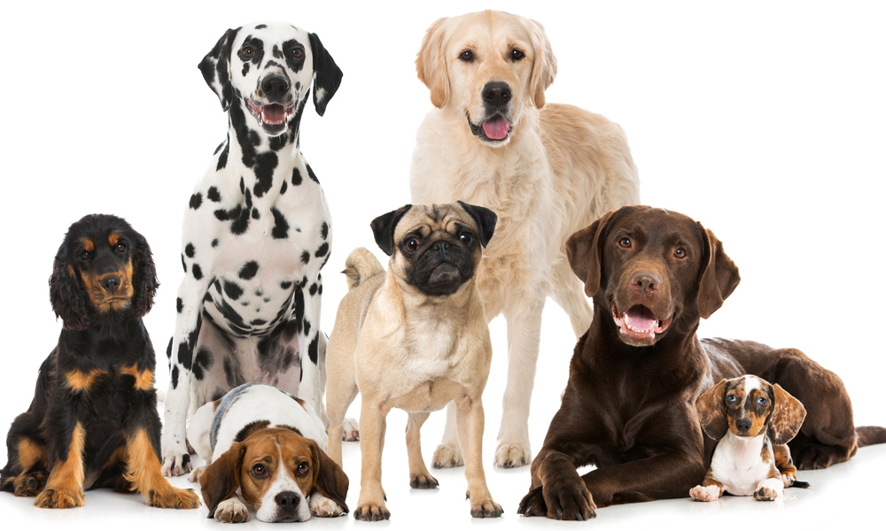

En Equilibrio Animal trabajamos con dedicación y cariño para cuidar a tus mascotas como si fueran nuestras. Nuestro equipo está conformado por médicos veterinarios, técnicos y asistentes con experiencia y vocación.
Nos enfocamos en brindar servicios de alta calidad, siempre con calidez humana. Ya sea para consultas generales, urgencias o adopciones, puedes contar con nosotros.
Estamos convencidos de que cada mascota merece una vida feliz, saludable y llena de amor. ¡Gracias por dejarnos ser parte de su historia!
Nuestra misión es ofrecer servicios veterinarios de calidad, brindando un cuidado integral a nuestras mascotas y fomentando el bienestar animal. Nos esforzamos por crear un ambiente de confianza y seguridad para los animales y sus dueños.
Ser reconocidos como una de las clínicas veterinarias más confiables y avanzadas, siendo un referente en atención animal, innovación y compromiso social. Nuestro objetivo es continuar creciendo para ofrecer cada vez más y mejores servicios para el bienestar de nuestros amigos peludos.
Nos caracteriza nuestra pasión por el bienestar animal, nuestro equipo altamente capacitado y nuestro enfoque personalizado en cada paciente. Tratamos a cada mascota con el cuidado y amor que se merece, brindando atención médica de alta calidad y un servicio integral.
Elegirnos significa optar por una clínica que pone la salud y el bienestar de tus mascotas en primer lugar. Ofrecemos atención veterinaria integral, urgencias las 24 horas y un ambiente confiable y seguro para tu animal. Además, contamos con tecnología avanzada y un equipo de profesionales apasionados por su trabajo.